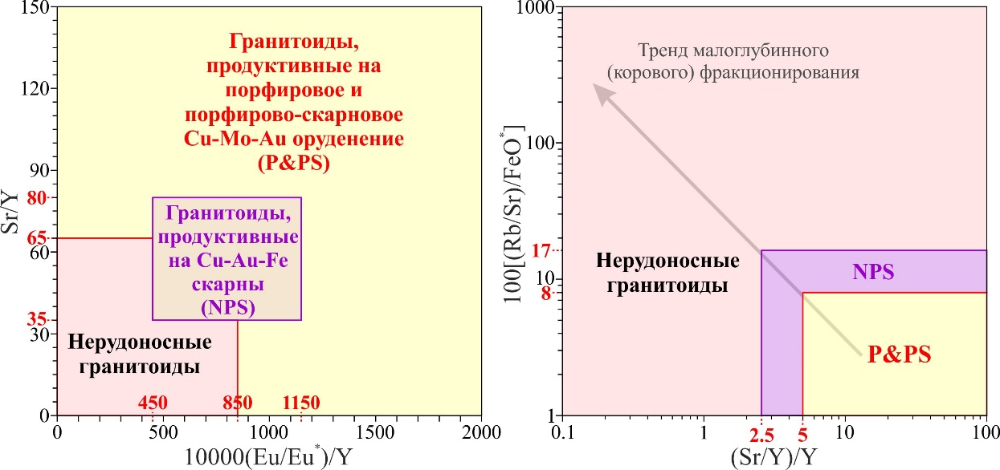
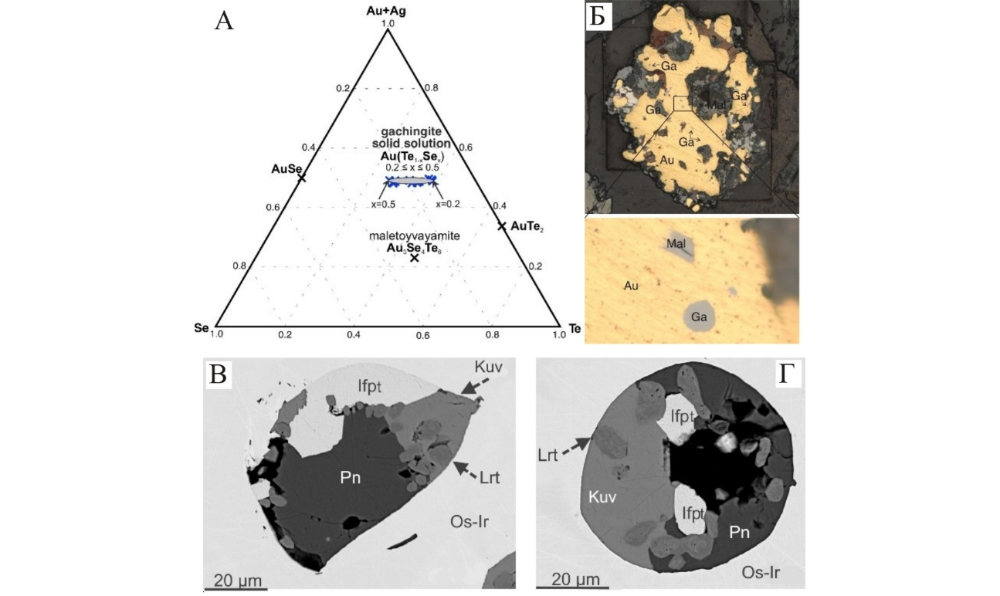

НОВЫЕ КРИТЕРИИ РУДОНОСНОСТИ ГРАНИТОИДОВ, ПРОДУКТИВНЫХ НА СКАРНОВОЕ И ПОРФИРОВОЕ ОРУДЕНЕНИЕ
Авторы: Т.В. Светлицкая, П.А. Неволько

Валовые геохимические индикаторы рудоносности гранитоидов, генетически связанных с оруденением Cu-Au-Fe скарнового и Cu-Mo-Au порфирово-скарнового типов. Слева – график Sr/Y–10000*(Eu/Eu*)/Y, cправа – график 100*[(Rb/Sr)/FeO*]–(Sr/Y)/Y
На основании комплексного изучения гранитоидов, генетически связанных с Cu-Mo-Au-Fe скарновыми и порфировыми месторождениям Восточного Забайкалья, были предложены новые валовые (Sr/Y)/Y и 100[(Rb/Sr)/FeO*] отношения для дискриминирования нерудоносных интрузий от интрузий, перспективных на экономически значимое скарновое оруденение и минерализацию порфирового(-скарнового) типа. Предложенные пороговые значения валовых (Sr/Y)/Y и 100[(Rb/Sr)/FeO*] отношений были успешно апробированы на месторождениях соответствующих типов в минерализованных поясах по всему миру, свидетельствуя об универсальности новых геохимических индикаторов рудоносности.
Svetlitskaya T.V., Nevolko P.A. (2022) New whole-rock skarn and porphyry fertility indicators: Insights from Cu-Au-Fe skarn and Cu-Mo-Au porphyry deposits in Eastern Transbaikalia, Russia. Ore Geology Reviews 149, 105108. DOI: 10.1016/j.oregeorev.2022.105108. Q1, IF (WoS) = 3,714
ОТКРЫТЫ НОВЫЕ МИНЕРАЛЫ БЛАГОРОДНЫХ МЕТАЛЛОВ
А.Ю. Барков, А.А. Никифоров, Marek Tuhý, Н.Д. Толстых.
Организации соисполнители: ЧГУ, Czech Geological Survey, Charles University

А - cоставы гачингита на диаграмме Se-Te-(Au+Ag), Б - включения гачингита (Ga) и малетойваямита (Mal) в золоте (Au), В,Г - многофазные включения с куваевитом (Kuv), Rh-пентландитом (Pn), лауритом (Lrt), изоферроплатиной (ifpt) в Os-Ir-Ru сплавах.
Открыты новые минералы золота – гачингит Au(Te1-xSex) и иридия – куваевит Ir5Ni10S16. Гачингит обнаружен на эпитермальном Au-Ag месторождении Малетойваям (Камчатка), где образует серые с голубоватым оттенком каплевидные включения в золоте до 10 мкм. Куваевит найден в россыпи р. Сисим (Восточный Саян) в Os-Ir-Ru природных сплавах в составе многофазных включений с Rh-пентландитом, лауритом-эрликманитом и Pt-(Pd)-Fe сплавами.
Tolstykh N.D., Tuhỳ M., Vymazalova A., Laufek F., Plášil F. Gachingite, Au(Te1-xSex) 0.2≈x≤0.5, a new mineral from Maletoyvayam deposit, Kamchatka peninsula, Russia. Mineralogical magazine. 2022. 86. 205-231. DOI: 10.1180/mgm.2022.9. Q2, IF (WoS) = 2,131
ФОТОЛЮМИНЕСЦЕНТНЫЕ МАТЕРИАЛЫ СОСТАВА NaSrR(BO3)2: СИНТЕЗ, РОСТ, СТРУКТУРА И ОПТИЧЕСКИЕ СВОЙСТВА
Комплексные новые соединения NaSrR(BO3)2 (R= Ho-Lu, Y, Sc) получены методом твердофазового синтеза и выращены кристаллы с использованием растворителя Na2O-B2O3-NaF. В диапазоне от 190 до 900 нм спектры соединений с Yb, Lu и Y не имеют каких-либо пиков, а соединения, содержащие Ho, Er и Tm, имеют типичные пики поглощения, соответствующие переходам из нижнего подуровня в возбуждённое состояние.
Полученные соединения могут рассматриваться в качестве эффективных ИК-люминофоров или матриц для создания скрытых, машиночитаемых флуоресцентных меток, используемых для защиты ценных бумаг, а также активных сред для лазеров, генерирующих в безопасном для человеческого глаза спектральном диапазоне (1,5-1,6 мкм).
Kuznetsov, A. B., Kokh, K. A., Sagatov, N., Gavryushkin, P. N., Molokeev, M. S., Svetlichnyi, V. A., Lapin, I. N., Kononova, N. G., Shevchenko, V. S., Bolatov, A., Uralbekov, B., Goreiavcheva, A. A., & Kokh, A. E. Synthesis and Growth of Rare Earth Borates NaSrR(BO3)2 (R = Ho–Lu, Y, Sc). // Inorganic Chemistry, 2022, 61, 19, 7497–7505, DOI: 10.1021/ACS.INORGCHEM.2C00596. Q1, IF (WoS) = 5,436